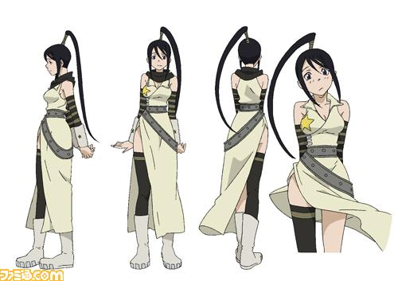

나카츠카사 츠바키(Tsubaki Nakatsukasa)

소울 이터의 등장인물, 성우는 애니메이션에서 나즈카 카오리/김성연/모니카 리얼, 드라마 CD에서 노토 마미코. 블랙☆스타의 파트너인 '암기'. 이름인 츠바키의 뜻은 동백꽃. 이름의 유래는 구로사와 아키라의 영화 츠바키 산주로의 츠바키로 보인다.남들 눈에 튀고 싶어하여 엇나가는 블랙☆스타의 성격 때문에 귀신의 혼을 좀처럼 모으지 못하고 언제나 "만년 보충수업"의 가도를 달리고 있는 중.하지만 블랙☆스타와 달리 츠바키 본인은 성실한 편이여서 필기 시험 성적은 의외로 일당 중에서 마카 다음으로 좋다.반에서 중상위권 정도. 다만 논리적 함정 같은 데는 약한 모습을 보인다.